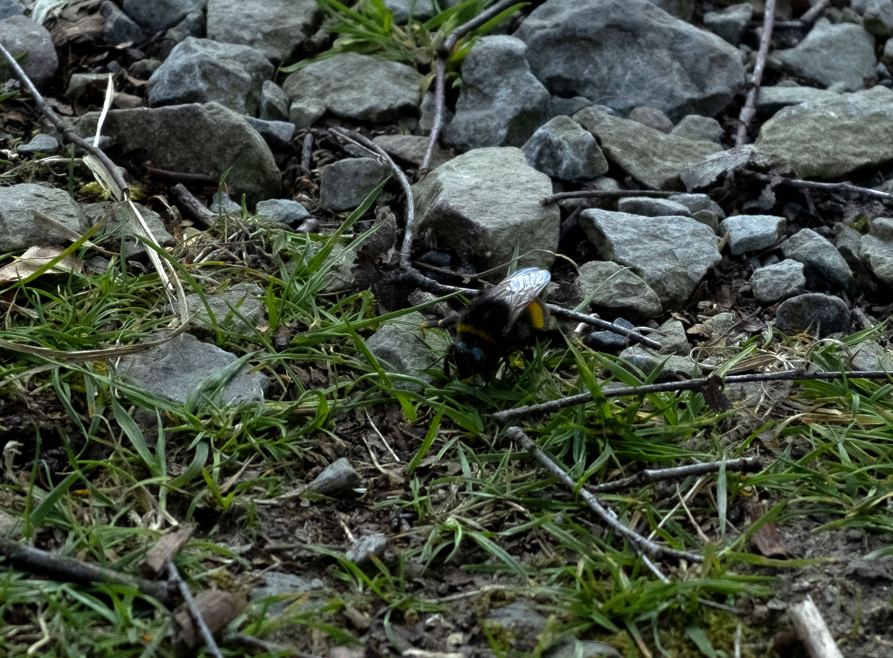
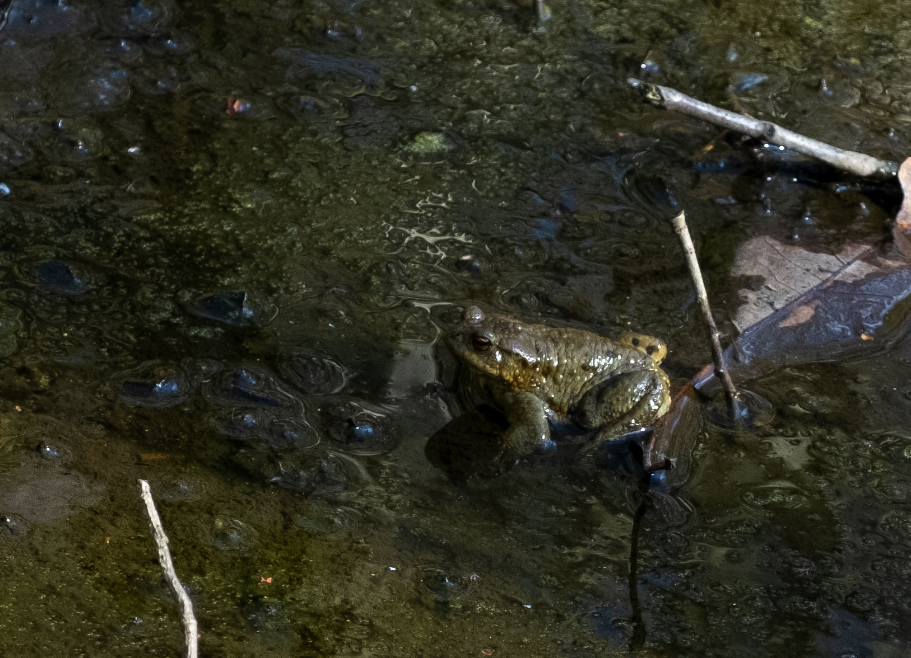

The northwest is best known for Manchester, a beloved concrete jungle. Manchester is a special place, the heart of our home, but it often draws our attention from nature's beauties. Jordan Hargreave wanted to remind us to appreciate the small things in life, and that is what he set out to do with his new short film ‘Breathe Easy’ which came out last week. This is Hargreave’s third short film, following the success of his 2017 darling ‘Finding Solace’ which centres around the mental decline of a young man after losing his friend. Before long he starts seeing his friend's ghost, encouraging him to reach out to other friends and his family members.

Connor sees Adam's ghost throughout the film, but he is never in focus. (Finding Solace, Hargreave 2017)
‘Breathe Easy’ follows a young girl, Emily, who runs away after an argument with her mum. She runs into the forest as she cries, and leans against a tree, slumping down to the ground. It is here that she notices a digger bee crawling along the ground. Emily watches the bee as her breathing steadies.
Emily looks around at the trees and the flowers before picking herself up and approaching a stream, where a toad sits. It is still and, despite its small stature, it looks like a mighty and wise protector.
